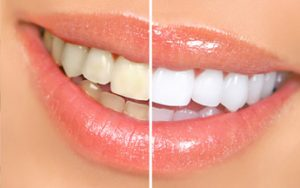
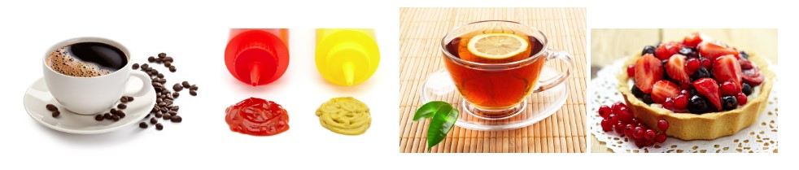

1. Последующие 48 часов являются решающими для достижения максимальных результатов отбеливания зубов, поэтому постарайтесь избежать употребления пищи, богатой красящими веществами: кофе, чай, газированные напитки (фанта, кола), красное вино, ягодные пироги, свёкла, горчица, кетчуп, соевый соус.
До конца недели желательно придерживаться данных ограничений.
2. После процедуры отбеливания не рекомендуется курить, т.к. табачный дым снижает достигнутый эффект.
3. Женщинам после процедуры отбеливания не рекомендуется использовать яркую губную помаду.
4. Рекомендуется избегать одновременного употребления продуктов с большой разницей температур.
5. Рекомендуется использовать фторсодержащие ополаскиватели для полости рта.
6. Следует использовать отбеливающую пасту утром и фторсодержащую вечером.

7. Рекомендуется подобрать зубную щетки средней жесткости.
8. Не рекомендуется проводить домашнее отбеливание ( в течение 1 года), т.к. это может привести к появлению гиперчувствительности.
9. Рекомендуется приобретать средства по уходу за полостью рта в специализированных магазинах или аптеках, что гарантирует качество покупаемого продукта.
10. Рекомендуется регулярно, раз в 6 месяцев, посещать стоматолога для проведения профилактических осмотров.
11. В случае появления чувствительности обратитесь к Вашему стоматологу для консультации.
Эффект отбеливания длится приблизительно 2 года, но результат зависит от индивидуальных особенностей и соблюдения данных рекомендаций.